L9 - PAM Theory#
PAM Theory
A PAM link in GNU Radio: levels, noise, Gray coding, pulse shaping, the eye, matched filtering, and timing recovery.
Lesson 9 · Module 4: Digital Modulation · Dr. Neil Rogers
Slides
Learning Objectives
- I can describe PAM theory and identify the pulse-shaping, symbol-rate, and bandwidth trade-offs.
- I can apply matched filtering and symbol-timing recovery to a received PAM signal.
The PAM Flowgraph
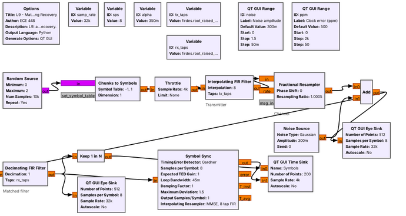
Today’s flowgraph sends random bits as PAM through noise and a clock error.
Each block is one idea from this lesson.
Lesson 10 sends text over a PAM link. Before that works, the link has to carry random bits reliably, and the figure is the flowgraph that does it. Bits become symbols, a filter shapes each symbol into a pulse that fits a fixed bandwidth, the channel adds noise and a clock error, and the receiver filters, finds the right instant to sample, and recovers one number per symbol.
Part 1 covers what a PAM symbol is, what noise does to it, and how its levels look on a constellation. The parts after that build the flowgraph one block at a time, and every block has a parameter we have to choose.
Part 1: Binary and M-ary PAM
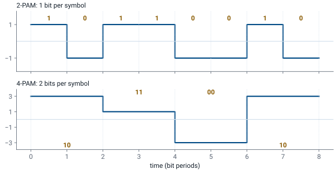
PAM sends each symbol as a pulse whose height carries the bits.
Binary PAM sends \(+A\) for a 1 and \(-A\) for a 0.
\(M\) levels carry \(\log_2 M\) bits, so \(R_s = R_b/\log_2 M\).
Pulse amplitude modulation (PAM) is the simplest digital signal: each symbol is a pulse, and its height carries the data. Binary PAM, or 2-PAM, sends a pulse of height \(+A\) for a 1 and \(-A\) for a 0, and the receiver decides by the sign of what it receives. The two levels are mirror images, so they sit as far apart as the transmitter’s power allows. Compare FSK from Lesson 8: its two tones are orthogonal, at right angles on a constellation, so at the same power its two points sit closer together than PAM’s \(\pm A\), and the same noise reaches across between them sooner. M-ary PAM uses more levels: 4-PAM uses \(\pm 1\) and \(\pm 3\) and carries two bits per symbol. In general, \(M\) levels carry \(\log_2 M\) bits, so the symbol rate \(R_s\), in symbols per second or baud, is
where \(R_b\) is the bit rate. The figure sends the same eight bits both ways: 4-PAM takes half as many symbols, each twice as long. In GNU Radio, a Chunks to Symbols block makes this mapping: it reads a number from 0 to \(M-1\) and outputs the matching level from a table, such as [-1, 1].
What Noise Does to the Levels
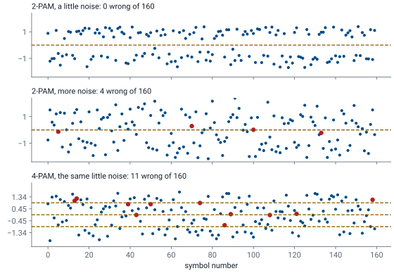
Noise spreads each level into a band.
A sample past a dashed threshold is a wrong decision, in red.
4-PAM’s levels sit closer, so the same noise does more harm.
Each strip shows what the receiver gets, one sample per symbol, after the channel adds noise. The receiver picks the nearest level, so the dashed lines halfway between the levels are its decision thresholds. With a little noise, the 2-PAM samples stay in two tight bands and none crosses zero. Turn the noise up and the bands spread until a few samples land on the wrong side, and each red dot is a wrong bit.
The bottom strip is 4-PAM at the same transmit power and the same little noise as the top strip, so its levels are scaled from \(\pm 1, \pm 3\) to about \(\pm 0.45, \pm 1.34\). Four levels in the same power sit closer together, so bands that were harmless for 2-PAM now cross the thresholds. That is the trade the rest of the course keeps meeting: more levels carry more bits per symbol, and they need a quieter channel. Every link in the course shows this on its displays: on a constellation sink, on an eye diagram, and in the text it delivers.
Constellations and Gray Coding
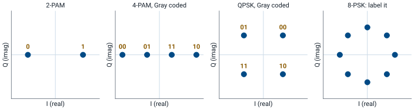
PAM’s levels lie on the real axis; PSK’s points lie on a circle.
Gray coding: neighboring points differ in one bit.
Now label the 8-PSK points.
A constellation diagram plots each symbol as a point on the I/Q plane, the view GNU Radio’s constellation sink gives. PAM changes only the height of a real pulse, so all its points sit on the real axis: two for 2-PAM, four for 4-PAM. m-PSK, the subject of Lesson 15, keeps the height fixed and moves the points around a circle instead, so it uses both axes. The figure ends with 8-PSK, eight points at 45° spacing, unlabeled.
The labels show which bits each point carries. In a Gray code, each point differs from its neighbors in exactly one bit, so 4-PAM goes 00, 01, 11, 10 rather than counting 00, 01, 10, 11. Noise almost always pushes a sample to a neighboring point, not across the constellation, so with Gray coding a wrong decision usually costs one bit rather than two. Label the 8-PSK points with a Gray code before the next frame: each point must differ from both its neighbors in one bit, all the way around. The practice set checks your answer.
Part 2: Why Not Rectangular Pulses?
A rectangular pulse has a sinc spectrum.
Its first sidelobe is only 13 dB down, and the sidelobes fall off slowly.
The signal spills into neighboring channels.
The waveforms in the last figure use rectangular pulses: each level holds for one symbol period \(T = 1/R_s\) and then jumps, and those jumps spread the spectrum. The spectrum of a rectangular pulse is a sinc, with its first nulls at \(\pm R_s\) and sidelobes that continue far beyond. The first sidelobe is only 13 dB below the peak, and the sidelobes decay slowly with frequency.
A radio channel has a fixed width, set by a regulator or by the neighbors on either side. A rectangular-pulse transmitter puts power well outside its own channel, which interferes with other users and can exceed the emission mask its license sets. The fix is to round off the pulse so that its spectrum ends, and the shape we use for that is the raised cosine.
Raised Cosine and Bandwidth
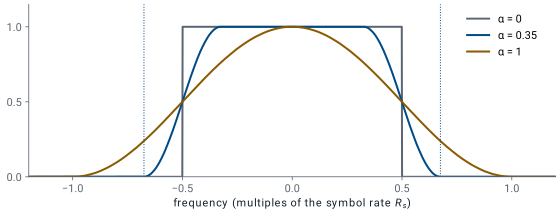
The roll-off \(\alpha\) runs from 0 to 1; 0.35 is common.
The raised-cosine pulse has a spectrum that is flat in the middle and rolls off smoothly to exactly zero. The roll-off factor \(\alpha\), between 0 and 1, sets how gradual the edge is. The spectrum spans \(-(1+\alpha)R_s/2\) to \(+(1+\alpha)R_s/2\), so on GNU Radio’s complex baseband display, and on the air after upconversion, the signal occupies
At \(\alpha = 0\) the bandwidth is the minimum possible, \(R_s\), but that pulse is impractical: its spectrum has a brick-wall edge, so its pulse lasts forever. At \(\alpha = 1\) the bandwidth doubles, but the pulse is short and forgiving of timing errors. Most real systems sit between 0.2 and 0.5; 0.35 is a common default and the value used throughout this lesson.
Zero Intersymbol Interference
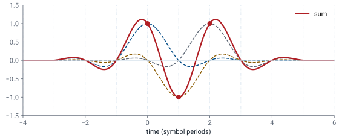
Each pulse is zero at every other symbol instant.
Sampled at the right instants, the sum gives back each symbol exactly.
A smooth pulse lasts longer than one symbol, so neighboring pulses overlap. Overlap that corrupts a sample is intersymbol interference (ISI). The raised cosine avoids it by design: each pulse passes through zero at every symbol instant except its own. In the figure, three overlapping pulses add to the red waveform, and at each symbol instant the waveform equals that symbol’s value exactly, because the other two pulses are zero there.
That property holds only at the symbol instants. Between them, the pulses add to values that depend on the neighbors, so a receiver that samples at the wrong time sees interference. Finding the right time is Part 5.
Root-Raised Cosine: Half at Each End
The transmitter and receiver each use a root-raised cosine (RRC).
Together the two filters make one raised cosine.
The receive half also rejects noise outside the signal band.
In practice we split the raised cosine into two equal halves. The transmitter shapes each symbol with a root-raised-cosine (RRC) filter, whose spectrum is the square root of the raised cosine’s, so the transmitted bandwidth is still \((1+\alpha)R_s\). The receiver applies the same RRC filter again, and the two in cascade multiply to one raised cosine, with its zero-ISI property, at the receiver’s output.
The split serves a second purpose. The receive filter passes the signal’s band and rejects the noise everywhere else, and the same RRC is the filter that does this best, as Part 4 shows. A consequence is that the transmitted signal alone does not have zero ISI; only the output of the receive filter does.
Pulse Shaping in GNU Radio
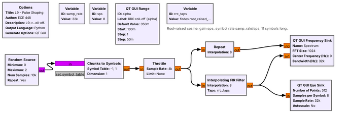
firdes.root_raised_cosine(sps, samp_rate, samp_rate/sps, alpha, 11*sps)
The pulse-shaping flowgraph makes 2-PAM symbols at \(R_s = 4\) kbaud and shapes them two ways. The Repeat block holds each symbol for sps samples, which is a rectangular pulse. The Interpolating FIR Filter does the RRC shaping: it inserts sps \(- 1\) zeros after each symbol to raise the sample rate, then filters with RRC taps, so each symbol becomes one smooth pulse.
The taps come from firdes.root_raised_cosine, whose five arguments are the gain, the sample rate, the symbol rate, \(\alpha\), and the number of taps. We set the gain to sps so the interpolated pulse keeps the symbol’s amplitude, and the length to 11*sps, which makes the pulse 11 symbols long; a shorter filter truncates the pulse and raises its sidelobes. The samples per symbol, sps = 8 here, must be an integer, and it ties the rates together: \(R_s = \) samp_rate/sps \(= 32\text{ kHz}/8 = 4\) kbaud.
Rectangular and RRC Spectra
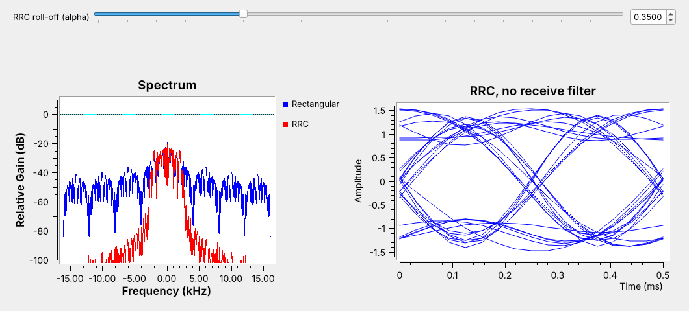
RRC at \(\alpha = 0.35\) fits \(4 \times 1.35 = 5.4\) kHz.
The rectangular sidelobes fill the whole 32 kHz span.
With the flowgraph running, the frequency sink shows what pulse shaping does. The rectangular signal (blue) has its main lobe between \(\pm 4\) kHz, the first nulls at \(\pm R_s\), and sidelobes only 20 to 30 dB below its peak across the entire 32 kHz the samples can show. The RRC signal (red) ends near \(\pm 2.7\) kHz, half of \(B = 1.35 \times 4 = 5.4\) kHz, and falls 50 dB or more below its peak outside that. Drag the \(\alpha\) slider and the red edge moves with \((1+\alpha)R_s/2\).
The eye sink on the right shows the RRC signal before any receive filter. The traces cluster near \(\pm 1\) but do not pass cleanly through them, because one RRC alone has some ISI. The receive filter of Part 4 removes it.
Symbol Rate and Bandwidth
A link must fit a 12.96 kHz channel. With \(\alpha = 0.35\), the largest symbol rate that fits is
That number goes straight into the flowgraph. At a sample rate of 48 kHz, sps = 48/9.6 = 5, an integer, so the Interpolating FIR Filter interpolates by 5 and the RRC taps use a symbol rate of samp_rate/sps. At 32 kHz, 32/9.6 is not an integer, so the flowgraph would need a different sample rate.
Modulation |
Bits per symbol |
Bit rate at 9.6 kbaud |
Bandwidth |
|---|---|---|---|
2-PAM |
1 |
9.6 kb/s |
12.96 kHz |
4-PAM |
2 |
19.2 kb/s |
12.96 kHz |
4-PAM doubles the bit rate in the same channel by changing one block, the Chunks to Symbols table, but its levels sit closer together, so it breaks at less noise; try both in the explorer below. The other way to double the bit rate is to double the symbol rate, which doubles the bandwidth to 25.92 kHz and no longer fits the channel. Lowering \(\alpha\) to 0.25 instead would fit 10.4 kbaud, but with a longer pulse that tolerates less timing error.
Part 3: The Eye Diagram
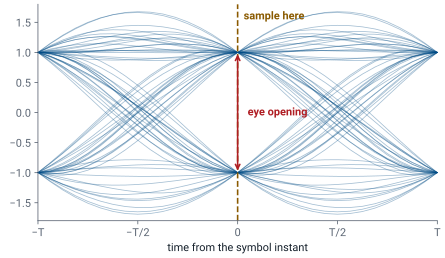
An eye diagram overlays the waveform, a few symbols at a time.
Sample where the eye is widest open.
An eye diagram cuts the received waveform into pieces two symbols long and draws them all on top of each other. For a raised-cosine signal with no noise, every trace passes exactly through \(\pm 1\) at the symbol instant, and the gap between the levels there, the eye opening, is as large as it can be. Away from the symbol instant the traces spread out. They cross zero halfway between symbols on average, but at \(\alpha = 0.35\) the individual crossings spread from about \(0.34T\) to \(0.66T\), depending on the neighboring symbols.
The eye shows three things at a glance. The height of the opening is the margin against noise, the width is the margin against timing error, and the center is where the receiver should sample. Noise fills in the eye from above and below, ISI makes the traces miss the levels, and a timing error moves the sampling instant off center. GNU Radio draws eyes with the QT GUI Eye Sink, which needs only the samples per symbol.
PAM Eye Explorer
The left panel is the eye of the received signal and the right panel is the transmitted spectrum, with a rectangular pulse in gray for comparison. Start with “RRC + matched” at \(\alpha = 0.35\): the eye is open and the spectrum ends at \((1+\alpha)R_s/2\). Lower \(\alpha\) and the spectrum narrows while the eye’s waist pinches, so timing error matters more. Switch to “rectangular” and watch the spectrum spread. Switch to “RRC only” and the eye picks up ISI, because the matched filter is missing. Then lower the SNR, move the sample time off center, and switch to 4-PAM, and watch the eye close and the count of wrong decisions climb.
Part 4: Matched Filtering
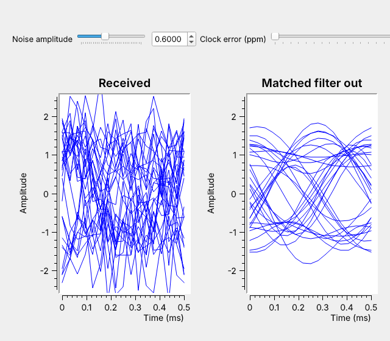
The matched filter is the transmit pulse, reused at the receiver.
It passes the signal’s band and blocks the rest of the noise.
The eye that noise closed opens again.
The receiver’s job at each symbol is to decide which level was sent, and the best it can do is make the signal as large as possible relative to the noise at the sampling instant. The filter that does this is the matched filter: a filter whose impulse response is the transmitted pulse, reversed in time. An RRC pulse is symmetric, so the matched filter for RRC shaping is the same RRC filter, which is why the split of the last part works.
The screenshot shows the effect with the noise turned up. Before the filter, the noise is spread across the full 32 kHz the samples represent, and the eye is closed: the traces fill the space between the levels. The signal occupies only about \(\pm 2.7\) kHz of that. The matched filter passes that band and blocks the noise everywhere else, so after it the traces converge near \(\pm 1\) and the eye is open again, with the same noise slider. Lesson 10 switches the filter off in a running link and watches the text fall apart. In GNU Radio the matched filter is a Decimating FIR Filter with rx_taps from firdes.root_raised_cosine with the same parameters as the transmitter except a gain of 1. Its decimation is 1, so it keeps all 8 samples per symbol for the timing recovery that follows.
Part 5: Symbol-Timing Recovery
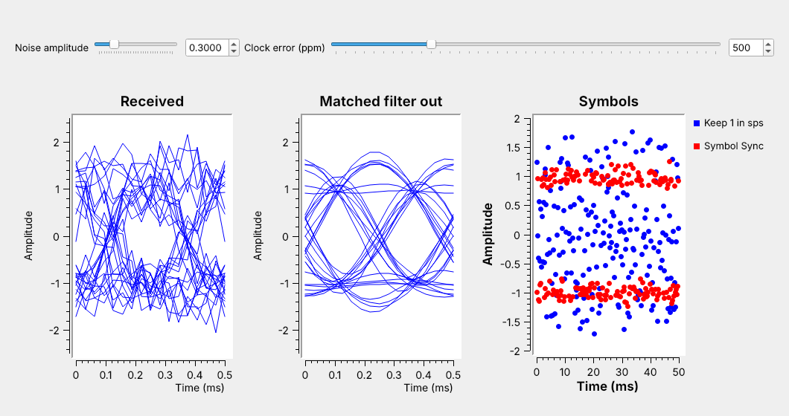
The receiver’s clock never matches the transmitter’s exactly.
Plain decimation drifts through the eye; Symbol Sync tracks its center.
After the matched filter, the receiver keeps one sample per symbol. The simplest way is to keep every eighth sample, which is what Keep 1 in N does, but it only works if the receiver knows where the eye’s center falls and that point stays fixed, and neither is true. The receiver’s sample clock and the transmitter’s symbol clock come from different oscillators, so they start at an arbitrary offset and drift apart. A clock error of 500 ppm, set on the slider, slips the sampling point by one sample every 2000 samples.
The right-hand plot shows the result. The blue samples from Keep 1 in N land wherever the drift has carried them, often near the zero crossings, where the receiver would decide many of them wrong. The red samples from the Symbol Sync block stay clustered at \(\pm 1\), because the block measures where the eye’s center is and keeps adjusting its sampling instant to follow it. Real oscillators are accurate to tens of ppm, not 500; the flowgraph exaggerates the error so the drift shows in seconds. At 20 ppm and 4 kbaud the sampling point still slips a whole symbol every 12.5 s, so no receiver of a long message can do without timing recovery.
The Symbol Sync Block
Parameter |
L9 value |
What it sets |
|---|---|---|
Timing error detector |
Gardner |
how the block measures the error |
Samples per symbol |
|
the nominal spacing |
Loop bandwidth |
0.045 |
tracking speed against jitter |
Output samples/symbol |
1 |
one sample per symbol out |
Symbol Sync is a feedback loop with three parts. The timing error detector (TED) estimates whether each sampling instant is early or late; the Gardner TED we use bases that estimate on the sample halfway between symbols, where transitions cross zero on average, so it needs at least 2 samples per symbol. The loop filter averages those estimates over many symbols, which also averages out the spread of the individual zero crossings. The interpolator computes the signal’s value at the corrected instant, which usually falls between two input samples.
The loop bandwidth is the main setting. A larger value tracks a drifting clock faster but lets noise jitter the sampling instant; a smaller value is steadier but slower to lock and to follow a drift. The default of 0.045 works for the flowgraph’s 500 ppm error. The block can also apply the matched filter itself, with its “Polyphase Filterbank, Matched Filter” interpolator, but we keep the matched filter as its own block in this lesson so that each idea has its own block.
The PAM Receiver in GNU Radio
Idea |
Block |
Parameter |
|---|---|---|
Symbol mapping |
Chunks to Symbols |
level table |
Pulse shaping |
Interpolating FIR Filter |
RRC taps, |
Matched filter |
Decimating FIR Filter |
the same RRC |
Eye check |
QT GUI Eye Sink |
|
Timing recovery |
Symbol Sync |
TED, loop bandwidth |
Every idea in this lesson became one block and one or two parameters. Choosing them for a real link starts from the channel: its width and \(\alpha\) fix the symbol rate, the symbol rate and the radio’s sample rate fix sps, and sps and \(\alpha\) fix both RRC filters. The eye sink is the check at each stage, before and after the matched filter and after timing recovery.
On an SDR, the transmit half of this flowgraph ends at the radio’s sink block and the receive half starts at its source block, with the channel replaced by a real one. The noise and the clock error then come from the hardware rather than from a slider, which is why the receiver we built today already handles both.
Key Point
The RRC filter at the transmitter fixes the bandwidth at \((1+\alpha)R_s\). The same RRC filter at the receiver rejects the noise and removes the ISI, and Symbol Sync finds the center of the eye.
Downloads
L09-pulse-shaping.grc: 2-PAM with rectangular and RRC pulses, their spectra, and the RRC eye, with a roll-off slider. No hardware needed.
L09-matched-filter.grc: an RRC 2-PAM signal through noise and a clock error, then a matched filter and Symbol Sync, with eyes before and after the filter and plain decimation compared with timing recovery. No hardware needed.
Open a .grc file from GRC’s File menu, or run gnuradio-companion L09-pulse-shaping.grc from the radioconda prompt.
This lesson follows Dr. Rogers’s 2025 PAM slides, L13-pam-theory.pdf, for its topics and these pages for the hands-on steps, in this order:
PySDR: Digital Modulation: PAM levels, constellations, and Gray coding (Part 1).
PySDR: Pulse Shaping: rectangular and raised-cosine pulses, RRC, and the eye (Parts 2 and 3).
GNU Radio wiki: Guided Tutorial, PSK Demodulation: the RRC transmit filter, the matched filter, and symbol timing in GRC (Parts 4 and 5).
PySDR: Synchronization: why the receiver’s clock drifts and how a timing loop follows it (Part 5).
Summary
Idea |
What it is |
Number to remember |
|---|---|---|
Symbol rate |
\(R_s = R_b/\log_2 M\) |
4-PAM halves \(R_s\) for the same \(R_b\) |
Noise |
spreads each level into a band |
more levels, closer together, break sooner |
Gray coding |
neighbors differ in one bit |
4-PAM: 00, 01, 11, 10 |
Raised cosine |
zero-ISI pulse with roll-off \(\alpha\) |
\(B = (1+\alpha)R_s\) |
Root-raised cosine |
half the raised cosine, at each end |
|
Samples per symbol |
|
an integer; L9 uses 8 |
Eye diagram |
waveform overlaid two symbols at a time |
sample at the widest opening |
Matched filter |
the transmit pulse, at the receiver |
opens the eye that noise closed |
Symbol Sync |
timing error detector, loop, interpolator |
Gardner, loop bandwidth 0.045 |
Practice
Looking Ahead
Lesson 10 sends ASCII text over this PAM link.
It adds bytes to bits, a frame marker, and a slicer back to bits.
The L10 Lab runs the link over real radios.
Today’s receiver ends with one clean sample per symbol, and Part 1 said what to do with it: decide the nearest level. Lesson 10 builds the rest of a working link around today’s flowgraph. Text becomes bytes and bytes become bits before the Chunks to Symbols block; after Symbol Sync, a Binary Slicer turns each sample back into a bit; and because a receiver that starts listening mid-message cannot tell where one byte ends and the next begins, the transmitter adds a known marker that the receiver searches for.
The L10 Lab then moves the link from simulation to radios, where the noise and the clock error come from real hardware. Before Lesson 10, run both L9 flowgraphs, and be able to find the symbol rate that fits a given channel and the sps that a sample rate gives.